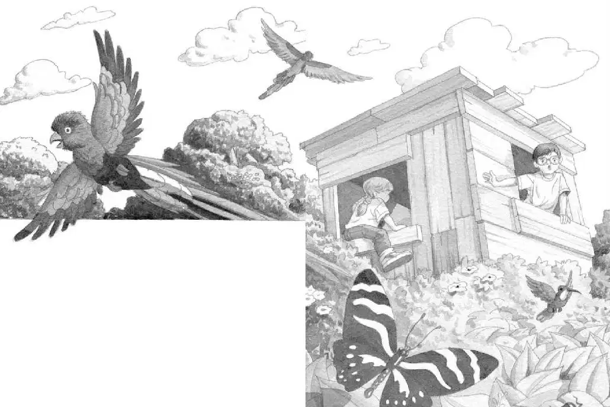

Jack opened his eyes.
The air was hot and steamy.
“It looks like we landed in some bushes,” said Annie.
She was peeking out of the tree house window. Peanut was peeking out of Annie’s pocket.
Jack peeked out of the tree house, too.
They had landed in a sea of shiny green leaves. Outside there were flowers, bright butterflies, and birds. Just as in the book.
“That’s strange,” said Jack. “I wonder why we didn’t land in a tree. The way we always do.”
“I don’t know,” said Annie. “But let’s hurry and find the thing for Morgan. So we can get back home before we meet any big bugs.”
“Wait. This seems weird,” said Jack. “I don’t understand why we landed in bushes. I’d better read about this.”
“Oh, come on,” said Annie. “We don’t even need the ladder. We can just climb out the window.”
Annie put Peanut in her pocket. She stuck one leg out the window.
“Wait!” Jack grabbed Annie’s other leg. He read:
The rain forest is in three layers. Thick treetops, often over 150 feet in the air, make up the top layer. This is called the forest canopy. Below the canopy is the understory, then the forest floor.

“Get back in here!” cried Jack. “We’re probably more than 150 feet above the ground! In the forest canopy!”
“Yikes!” said Annie. She slipped back into the tree house.
“We have to use the ladder,” said Jack. He got on his hands and knees. He moved leaves away from the hole in the floor. He looked down.
The ladder seemed to fall between the branches of a giant tree. But Jack couldn’t see beyond that.
“I can’t tell what’s down there,” he said. “Be careful.”
Jack put the rain forest book in his backpack. Then he stepped onto the rope ladder.
He started down. Annie followed with Peanut in her pocket.
Jack pushed through the leaves.
He came to the understory below the canopy.
He looked down at the forest floor. It was very far away.
“Oh, man,” whispered Jack.
This world was completely different from the one above the treetops.
Now that they were out of the sun, it was cooler. It was also damp and very quiet.
Jack shivered. It was the spookiest place he had ever seen.